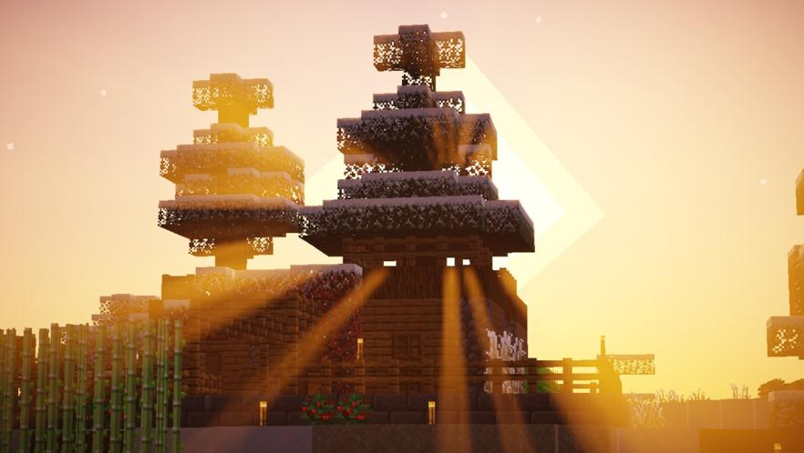

Документация
Основные правила
Правила чатика:
Пожалуйста, проявляйте уважение к любому человеку в чате, будь то он ваш друг или кто-то еще, кого вы не знаете..
1. Запрещен спам, флуд, сообщения не несущие смысловой нагрузки..
2. Запрещены оскорбления, если они оскорбительны...
3. Угрозы, если они реально угрожающие - запрещены.
4. Не надо портить настроение участникам разговорами о попытках сдохнуть и т.п.
5. Выпрашивание ролей и привилегий тоже запрещено -_-
Слово администрации имеет больший вес чем любое из правил. :3
Правила сервера в майнкрафте:
1. Запрещено использование читов, в том числе ресурспаков x-ray, а так же стороннего софта который даёт вам преимущество над другими игроками. Исключение шейдеры и мини карта. (Пожизненный бан) 2.Запрещено использование любых дюпов майнкрафта кроме дюпа взрывов. Запрещено гриферить постройки игроков (Пожизненный бан)
2. Запрещено взламывать аккаунты игроков сервера. (Пожизненный бан)
3. Слово администрации имеет больший вес чем любое из правил.
4. Запрещено обманывать администрацию по поводу серьезных вопросов. (Временный или перманентный бан по решению администрации)
5. Вайп сервера будет произведен только по многочисленным просьбам всех игроков, или тотальной поломке мира. В случае перехода на новую версию когда необходимо сделать вайп сервера, то все постройки, города и ресурсы переносятся на новую карту.
6. Все проблемы должны решаться на собрании сервера (проводится раз в неделю). При обострении конфликта рекомендуется заглушить чат и не отвечать на провокационные сообщения...
7. нон рп запрещен (запрещено тупое рп ломающее игру)